Objectives
In this Exercise you will learn how to create the RPE device credentials in MAS Monitor.
Your RPE asset will have three devices that measures different things:
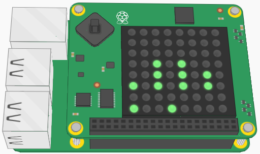
| Device Type | Measurements |
|---|---|
| CPU | CPU related metrics from the Pi |
| OSC | Oscillator related metrics from the Pi |
| ENV | Environmental metrics from the SenseHAT |
You need to create three device types (CPU, OSC and ENV) with the related metrics (as we already know what they are) and then later a device of each device type. The credentials for the three devices will be used when configuring the RPE Node-RED script to work in your environment (in exercise 3. Convert Pi to RPE).
1. Login
a. Login to your instance of MAS and navigate to Monitor: 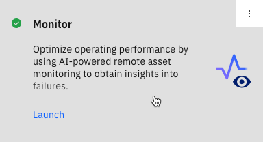
2. Create the device types
Note
Jump to Create the devices if the CPU, OSC and ENV device types have already been created.
a. Go to the Setup tab: 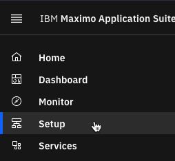
b. We will setup three device types: CPU, OSC and ENV.
c. Select the Devices tab and press the blue + button to add a new device type: 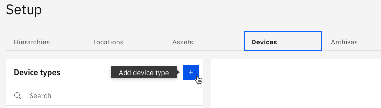
d. Select the Basic template and click Next: 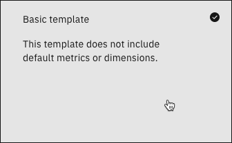
e. Define the Device type name as “CPU” and either clear or replace the Description
f. Click Create and click on Add metric and Add metric 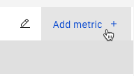
g. Create the following metrics while pressing “Add metric +” to add another metric row:
| Metric | Display name | Event | Type | Unit |
|---|---|---|---|---|
| cl | CPU_Load | event | NUMBER | Percentage |
| ct | CPU_Temperature | event | NUMBER | C |
| du | Disk_Usage | event | NUMBER | Percentage |
| mu | Memory_Usage | event | NUMBER | Percentage |
| evt_timestamp | event | TIMESTAMP |
Tip
All the values above are case sensitive.
h. Click the Add button and then the Save button to save the metrics
i. Expand the event and it should look somewhat like this (the order might be different): 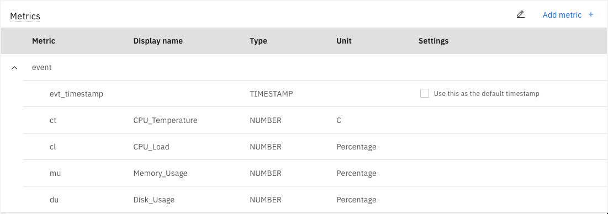
j. For the OSC Device type: repeat step 2c – 2f and create the following metrics:
| Metric | Display name | Event | Type | Unit |
|---|---|---|---|---|
| ov | OSC_Voltage | event | NUMBER | V |
| ot | OSC_Temperature | event | NUMBER | C |
| of | OSC_Frequency | event | NUMBER | Hz |
| evt_timestamp | event | TIMESTAMP |
k. Click the Add button and then the Save button to save the metrics
l. Expand the event and it should look somewhat like this (the order might change): 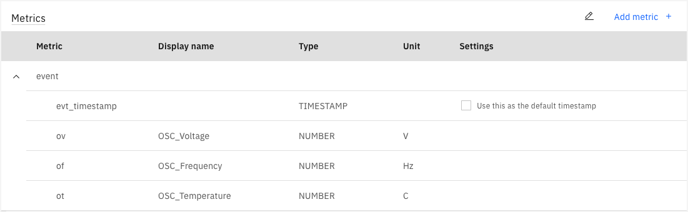
m. For the ENV Device type: repeat step 2c – 2f and create the following metrics:
| Metric | Display name | Event | Type | Unit |
|---|---|---|---|---|
| eh | ENV_Humidity | event | NUMBER | Percentage |
| ep | ENV_Pressure | event | NUMBER | millibar |
| et | ENV_Temperature | event | NUMBER | C |
| evt_timestamp | event | TIMESTAMP |
n. Click the Add button and then the Save button to save the metrics
o. Expand the event and it should look somewhat like this (the order might change): 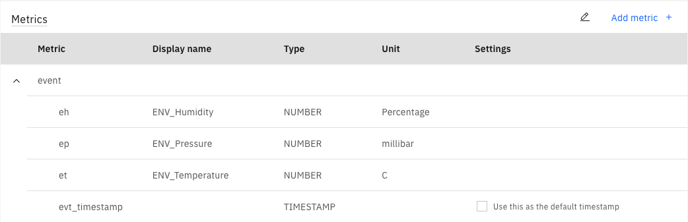
3. Create the devices
a. It is now time to create the three devices for the first asset. The example shows how to do that for the asset called RPE042.
b. Go to the Setup tab:
c. Select the Devicestab. Select the CPU device type and click the blue “Add a device +” link (There might already be existing devices in your environment, just make sure you create your own set):
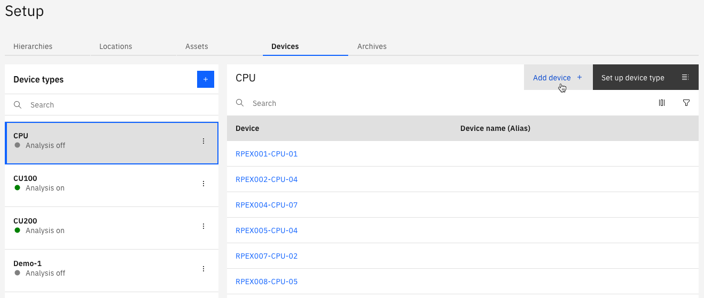
d. Define your own Device ID, leave the Token type to be Auto-generated, and click Add: 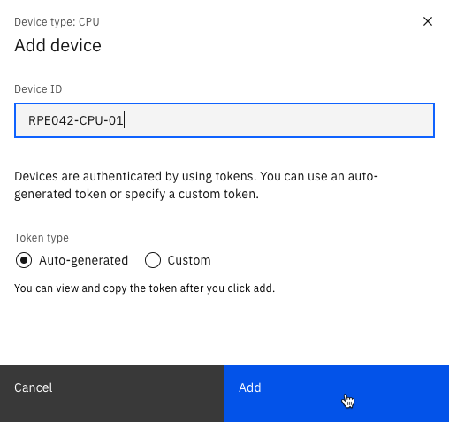
Attention
Make sure to write down the credentials – at least the Authentication Token as it is non-recoverable.
e. Once you have saved the credentials a safe place, then press Close: 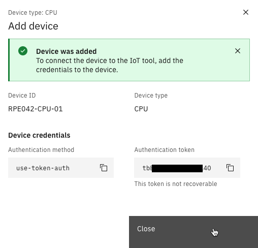
f. For the ENV device repeat step 3c – 3e, e.g. RPE042-ENV-17
g. For the OSC device repeat step 3c – 3e, e.g. RPE042-OSC-03
h. Navigate to the IoT Tool. This can either be done from the Monitor Home page: 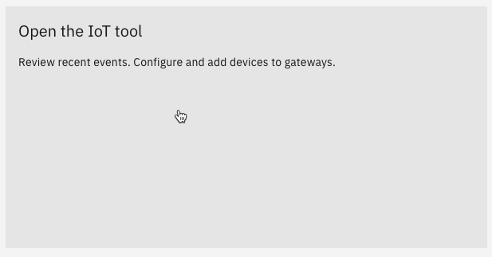
or from the Application Switcher in the upper right corner: 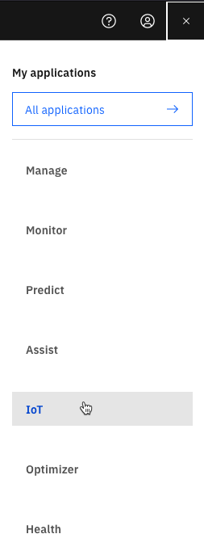
A new browser tab opens with the MAS Watson IoT Platform Service.
i. Here is how it could look like in the IoT Tool, once you have created all three devices and have used the Search by Device ID:
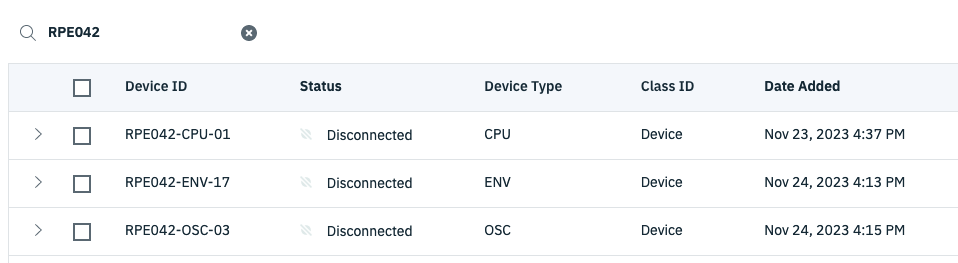
j. This concludes this exercise.